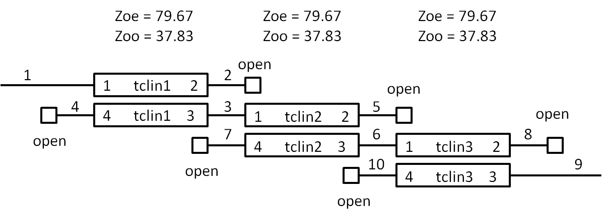

n
Port
A JavaScript Based Microwave Analysis and Learning Tool
code
/
readme
/
an RF repl
/
home
Output Area
// this is for a quarter wave at 6GHz var g = nP.global; g.fList = g.fGen(4e9,8e9,21); // set up the couplers var tclin1 = nP.tclin(79.667,37.834,0.491 * 0.0254); var tclin2 = nP.tclin(60.866,42.505,0.491 * 0.0254); var tclin3 = nP.tclin(79.667,37.834,0.491 * 0.0254); // set up the open var open = nP.Open(); // set up the filter var filt = nP.nodal([tclin1,1,2,3,4],[tclin2,3,5,6,7],[tclin3,6,8,9,10],[open,2],[open,4],[open,5],[open,7],[open,8],[open,10],['out',1,9]); var filtOut = filt.out('s21dB','s11dB'); // set up the plot var plot = {chartTitle:'Edge Coupled Filter', inputTable: [filtOut]}; // plot the data nP.log('Plot Demonstration'); nP.lineChart(plot);
